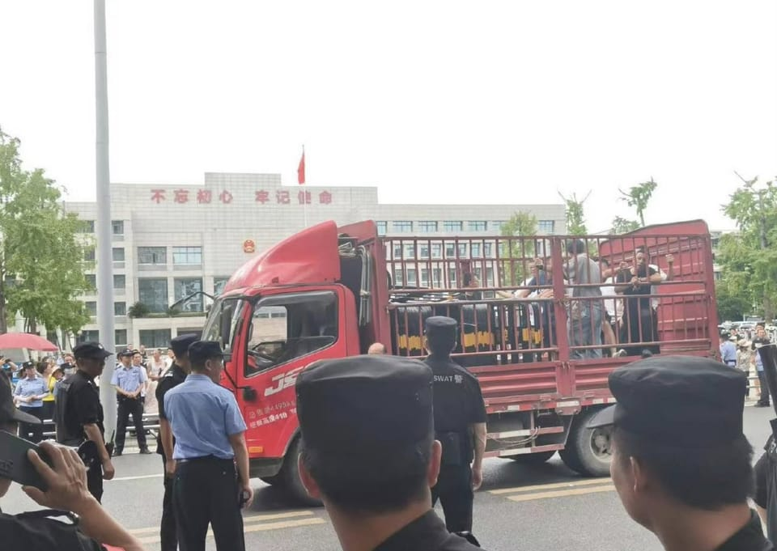

世界苦茶08月06日新闻 | 33条 | 江油街头抗议持續延燒

江油街头抗议持續延燒 | 英國前首相在臺支持臺灣 | 中國幼兒園免除保育費 | OpenAI, DeepMind, Claude連發新模型 | 俄羅斯油氣收入承壓 | 以色列內閣開除總檢察長引爭議
新增Substack，每週2-3更，歡迎關注
每日三條新聞解析
苦茶数据
美元兑人民币：7.19（昨日7.18，前日7.18）
美元兑日元：147.36（昨日147.17，前日147.78）
上证指数：3627（昨日3614，前日3569）
标普500指数：6299（昨日6329，前日6239）
比特币：113458（昨日114443，前日114825）
布伦特原油：68.07（昨日68.74，前日69.45）
中国新闻
• 中国预警汛期台风洪灾 ：中国官方预测，本月将有两到三个台风登陆或影响中国，海河流域、松辽流域部分河流可能发生较大洪水。综合中国网和红星新闻报道，中国应急管理部新闻发言人申展利星期二在汛期安全知识发布会上说，8月份中国七大江河流域全面进入主汛期。华北、东北、华东、华南、西南部分地区洪涝和风雹灾害风险高，海河流域、松辽流域部分河流可能发生较大洪水；预计有两到三个台风登陆或影响中国，一个台风影响长江以北地区。申展利也说，大兴安岭、新疆北部、中南、西南局部地区森林火灾风险较高；云南西部局部地区地质灾害风险高；长江中下游、江淮、新疆中北部局部地区存在高温干旱风险。
• 公办幼儿园免保育费 ：中国官方再加码育儿补贴力度。国务院印发新文件，逐步推行免费学前教育，其中明确从2025年秋季学期起，免除公办幼儿园学前一年在园儿童保育教育费。据新华社星期二报道，中国国务院办公厅印发《关于逐步推行免费学前教育的意见》（简称《意见》），强调按照强化普及普惠、稳妥有序推进、加大政府投入、经费合理分担的原则，逐步免除学前教育保育教育费，有效降低教育成本，提高基本公共教育服务水平，办好民众满意的教育。《意见》明确，从2025年秋季学期起，免除公办幼儿园学前一年在园儿童保育教育费。免保育教育费标准，按照县级以上地方人民政府及其教育、价格主管部门批准的公办幼儿园保育教育费收费标准执行。 （翻評：全國範圍每月100-700元不等，取300元算，一年投入總金額360億元，是個中等的數額。）
• 多部门联合推进新工业化 ：中国人民银行、中国工业和信息化部等多部门联合发文，要求推动产业加快迈向中高端，防止“内卷式”竞争。到2027年，支持制造业高端化智能化绿色化发展的金融体系基本成熟，服务适配性有效增强。中国人民银行、工信部、国家发展改革委、财政部、金融监管总局、中国证监会、国家外汇局联合印发《关于金融支持新型工业化的指导意见》（简称《意见》），指出坚持把金融服务实体经济作为根本宗旨和防范化解金融风险的根本举措，聚焦新型工业化重大战略任务，以需求牵引深化金融供给侧结构性改革，强化产业政策和金融政策协同，为推进新型工业化、加快发展新质生产力提供高质量金融服务。《意见》对照新型工业化重点领域，提出针对性支持举措。优化金融政策工具支持关键技术产品和攻关，多渠道为科技成果转化引入耐心资本，强化产业链重点企业综合金融服务，提升产业科技创新能力和产业链供应链韧性。 （翻評：新質生產力這個概念還沒捂熱呢，新工業化又來了。）
• 佛山防疫不力遭罚 ：基孔肯雅热疫情在中国广东地区持续蔓延，其中佛山目前累计近7000例病例。佛山官方部门公布基孔肯雅热防疫的典型案例，有机构因未及时清理蚊虫孳生地等受到行政处罚。根据《珠江时报》星期二报道，佛山市卫生健康、城市管理和综合执法等部门已全面开展执法检查，对人流密集的公共场所、医疗机构等场所持续开展蚊媒传染病防控卫生监督检查工作，落实落细基孔肯雅热和登革热传染病防控措施，期间对违反规定的单位、个人予以处理。禅城区卫生健康部门执法人员在对某小区游泳池进行现场监督检查时，发现小区泳池水质处理设备机房和池周溢水，槽内长期未清理，树叶、泥土堆积，导致排水不畅产生积水，积水中已见蚊幼虫蠕动。执法人员根据《广东省爱国卫生工作条例》等相关规定，对上述单位给予警告的行政处罚，同时责令立即改正。
• 中国物流景气指数回落 ：7月份中国物流业景气指数为50.5%，环比回落0.3个百分点。据中新社报道，中国物流与采购联合会星期二发布上述数据。分项指数中，业务总量指数、新订单指数、库存周转次数指数、资金周转率指数、物流服务价格指数、固定资产投资完成额指数、从业人员指数和业务活动预期指数处于50%以上扩张区间。
• 中国限制基层人员出国 ：美国媒体称，中国对公职人员的出国限制扩大到基层和外围单位。《纽约时报》星期天报道，一些幼儿园教师、医生甚至政府承包商和国有企业员工都被要求上交护照。报道称，在许多城市，公职人员即使因私人原因出国旅行，也需要获得批准。一些地方规定，退休人员要等两年才能取回护照。
• 日本促中方严惩袭日嫌犯 ：中国江苏省苏州市上周再次发生日本籍母子遇袭事件，日本内阁秘书长林芳正要求中国政府严惩嫌犯。据日本共同社报道，林芳正星期一在记者会上说：“我们将继续强烈要求中国政府严厉处罚苏州日本籍母子遇袭事件的嫌疑人，防止类似案件再次发生，同时确保在华日侨的安全。”林芳正透露，中方上星期五通报称将依法采取相应处罚被抓获的嫌疑人。林芳正强调，今后将与中国有关部门携手合作，尽全力保证在华日侨的安全。
• 中日钓鱼岛海域再冲突 ：中国海警本月在有主权争议的钓鱼岛，日本称尖阁诸岛领海驱逐日本渔船，并敦促日本立即停止在该海域的一切活动。中国海警局星期一在社交平台官方账号发布消息，中国海警局新闻发言人甘羽表示，日本“三加丸”号渔船8月1日至4日非法进入钓鱼岛海域，中国海警舰艇对该渔船采取管控措施并警告驱离。甘羽称，钓鱼岛及其附属岛屿是中国固有领土，敦促日本立即停止在该海域的一切违法活动。中国海警将持续在钓鱼岛海域内开展维权执法活动，维护中国领土主权和海洋权益。
• 《左宗棠收复新疆》开播 ：中国历史人文纪录片《左宗棠收复新疆》星期一开播。纪录片展现了晚清名臣左宗棠“抬棺出征”、捍卫166万平方公里国土的历史功绩。《星岛日报》引述学者说，纪录片的播出具备现实意义，除了宣示中国对新疆主权，还有助在新疆等区域树立对中国国家认同。综合湖南卫视和中国新闻网报道，《左宗棠收复新疆》由中共湖南省委宣传部、新疆自治区宣传部、甘肃省委宣传部、湖南广播影视集团共同出品，从8月4日至21日在湖南卫视等三个平台播出。 （翻評：只有髒話。）
• 福建提醒佛山返乡监测 ：中国广东省佛山市发生基孔肯雅热疫情，福建省福州与泉州两地疾控要求佛山返回人员14天自我健康监测。据人民日报客户端报道，福建省福州与泉州两地分别在7月29日与31日发布健康提示。两地疾控提醒返榕、返泉人员，进行14天自我健康监测，若出现发热、关节痛、皮疹等疑似症状，请立即就医并告知旅居史。
亚太印太新闻
• 印度洪水致多人失踪 ：印度喜马拉雅山区山洪暴发，造成至少四人死亡，50多人失踪。法新社报道，印度气象部门星期二对北阿坎德邦发布红色预警，并记录到偏远地区降雨量约为21厘米，达到“特大暴雨”。当地官员说，洪水造成四人遇难。救援队已到场展开救援行动。
• 泰国推经济补偿计划 ：泰国官员说，政府将斥资185亿泰铢实施经济刺激措施，并为上个月泰柬边境冲突中遇难者家属提供补偿。路透社报道，泰国政府发言人集拉育星期二在记者会上说，内阁批准向在7月的边境冲突中丧生的政府官员家属支付1000万泰铢，受伤官员将获赔最高100万泰铢。平民遇难者家属则获得800万泰铢赔偿，而伤者获赔最高80万泰铢。
• 台湾雇游说公司修美关系 ：美国国务院前资深顾问惠顿撰文指，台湾政策让台湾与美国总统特朗普渐行渐远，台湾从5月起以每月6万美元雇用亲特朗普的游说公司来补救台美关系。台湾外交部发言人星期二对此回应说，台驻处与华府公关公司合作是基于专业评估和实际需要，符合国际惯例。综合联合报和中时新闻网报道，发言人萧光伟说，台湾与美国的关系历经长期耕耘，在两党及各界支持下奠定了坚实的基础。台湾持续透过多元管道与美国各界互动，深化台美跨党派的友谊与合作。萧光伟指出，台湾驻美代表处也与华府公关公司合作，协助推动对美工作；相关合作是基于专业评估与实务需要，协助多元拓展美国各界对台美关系的理解与支持；此作法历经各届政府，行之有年。
• 英前首相力挺台湾 ：英国前首相约翰逊在台北出席凯达格兰论坛时说，面对中国大陆对台湾施加越来越大的压力，包括西方国家在内的所有人都应有勇气不再畏缩退让，而是选择与台湾站在一起。综合公视新闻网、台湾外交部官网和路透社消息，约翰逊星期二赴台出席“凯达格兰论坛：2025印太安全对话”并发表专题演讲。约翰逊说，他长期仰慕台湾，欣赏台湾半导体产业在人工智能科技中扮演的关键角色。
• 台湾拟将军费提至GDP3% ：台湾总统赖清德在凯达格兰论坛上说，台湾的国防预算将于明年上调至GDP3%以上。据台湾总统府官网消息，赖清德星期二出席“凯达格兰论坛：2025印太安全对话”开幕式并致辞。赖清德以英文发表讲话时说，今年的论坛聚焦三大主题，即印太区域安全、民主阵营的全社会防卫策略，以及经济、科技与产业外交的战略整合。这三大主题和台湾的发展方向紧密相连。他相信透过今年的论坛，台湾将与全球民主伙伴，凝聚更大的共识，一起让印太更安全、让世界更繁荣。
• 巴基斯坦暴雨致302死 ：巴基斯坦自6月26日进入雨季以来，暴雨引发的各类灾害已造成全国各地至少302人死亡、727人受伤。新华社报道，巴基斯坦国家灾害管理局星期一发布报告说，遇难者包括141名儿童和57名妇女。东部旁遮普省受灾最为严重，暴雨灾害在当地共造成163人死亡、579人受伤。此外，首都伊斯兰堡共有八人死亡、三人受伤。巴基斯坦国家灾害管理局预计，8月5日至10日，中北部地区仍将持续出现强季风降雨，建议地方政府重点监测脆弱地区并开展救援行动。
科技新闻
• Claude Opus 4.1模型升级 ：人工智能模型的竞赛再度升温。在OpenAI即将发布备受期待的GPT-5之际，Anthropic率先升级自家模型，推出Claude Opus 4.1，声称在编程、研究和数据分析能力方面实现显著提升。美东时间周二，Anthropic公司宣布新模型Opus 4.1在编程评估基准SWE-Bench Verified上的得分达到74.5%，较前代Opus 4的 72.5% 提升两个百分点。新模型在处理大型代码库导航和多文件代码重构方面表现尤为突出。GitHub、Rakuten Group 等客户反馈显示，Opus 4.1在代码修改精准度和调试效率方面均有显著改善，能够在不引入漏洞的情况下精确定位需要修正的代码位置。
• OpenAI开源两款GPT模型 ：OpenAI CEO 山姆·奥尔特曼周二宣布，公司将在未来几天里带来许多新东西，其中周二会迎来一项“小而重磅”的更新——预热已久的开源模型GPT-OSS。简单而言，OpenAI周二共发布两款开放权重AI推理模型。其中参数量达到1170亿的gpt-oss-120b能力更强，可以由单个英伟达专业数据中心GPU驱动；参数量210亿的gpt-oss-20b模型，则能够在配备16GB内存的消费级笔记本电脑上运行。两款模型都以Apache 2.0许可证发布，企业在商用前无需付费或获得许可。就该模型性能而言，GPT-OSS大致位于开源模型的第一梯队，但整体略逊于GPT-o3和o4-mini。
• DeepMind发布Genie 3模型 ：谷歌 DeepMind 今天发布了其最新的基础世界模型 Genie 3，被其视为是迈向通用人工智能的关键基石。DeepMind 研究总监 Shlomi Fruchter 表示：“Genie 3 是首个实时交互式通用世界模型。它超越了以往的狭义世界模型，不局限于任何特定环境。它可以生成照片级逼真的世界、虚拟世界，以及介于两者之间的一切。”Genie 3 仍处于研究预览阶段，尚未公开发布。只需简单的文本提示，Genie 3 就能生成几分钟的多样化交互式 3D 环境，帧率为每秒 24 帧，分辨率为 720p。该模型还具有“可提示的世界事件”功能，即用户可以使用提示来更改生成的世界。Genie 3 的模拟随着时间的推移在物理上保持一致，因为该模型能够记住它之前生成的内容。这种一致性使其能够发展出一种人类对物理的直观理解，使其成为通用人工智能的理想训练场。
财经新闻
• 日本软银大手笔增持英伟达、台积电股份： 日本软银集团正在增持英伟达、台积电的股份，这是孙正义关注人工智能基础工具和硬件的最新体现。监管文件显示，截至三月底的季度内，这家日本企业将其持有的英伟达股份增至大约30亿美元，高于前一季度的10亿美元。与此同时，软银还买入了价值约3.3亿美元的台积电股份，以及1.7亿美元的甲骨文公司股份。
• 美对华逆差创新低 ：美国6月与中国的贸易逆差大幅下降，创下21年来的最低水平。美国总统特朗普说，美国已接近与中国达成贸易协议。路透社报道，特朗普星期二接受美国消费者新闻与商业频道访问时说：“他要求举行会晤，如果我们达成协议，我很可能在年底前与他会面。如果我们无法达成协议，我就不会举行会晤。”特朗普也说：“我们非常接近达成协议。我们与中国的关系非常好。”
• 特朗普拟对药品加税 ：美国总统特朗普说，美国将于下周左右宣布半导体和药品行业关税，其中针对进口药品的渐进式关税可高达250%。特朗普星期二接受美国消费者新闻与商业频道访问时，作出上述发言。特朗普说，美国一开始将对进口药品征收较小的关税，但在一年到最迟一年半后，“这个税率将调高至150%，然后提高到250%，因为我们希望药品在美国本土生产”。不过，他并未说明初步税率会是多少。
• 光伏行业倡议反恶性竞争 ：中国机电产品进出口商会星期二发布关于反对不正当竞争，维护光伏行业对外贸易高质量发展的倡议，提出根据全球市场需求合理控制产能扩张节奏，有序推动落后产能出清，并推动光伏产品从“规模优势”向“质量优势”转型。中国机电产品进出口商会在公号发布倡议说，当前，光伏产业作为中国战略性新兴产业的核心领域，正面临全球能源转型的重大机遇与挑战。然而，部分企业为抢占市场份额，采取低于成本价出口、恶性竞争等短视行为，不仅损害了行业整体利益，同时对中国光伏产业的国际声誉也造成了不良影响。中国机电商会坚决抵制以低于成本价出口等方式的各类不正当竞争行为，并向广大光伏企业发出倡议。
• 台经济部长谈关税换投资 ：台湾经济部长郭智辉与产业界座谈时提到，若台湾投资4000亿美元换取关税优惠，该由谁出资？台湾经济部澄清，这不是政府的定案政策。综合台湾《联合报》和镜新闻报道，美国上星期五宣布将对台湾课征20%的对等关税，负责带领谈判团队的台行政院副院长郑丽君星期天清晨从美国返回台湾时说，与美国的关税谈判还要继续进行，“我们会继续努力，争取更好的税率”。对于争取税率调降要付出多少代价？台经济部长郭智辉星期一南下高雄与产业界座谈时指出，日本与韩国过去为争取15%美方关税待遇，分别承诺对美投资5500亿美元与3500亿美元，台湾若要取得同样税率，势必也将面临类似压力。
• 南非批美关税威胁就业 ：南非贸易和外交部门星期一联合召开媒体吹风会说，美国对南非输美商品征收30%高关税的政策将对南非经济造成严重冲击，可能导致约3万个就业岗位流失。新华社报道，南非贸易、工业和竞争部总司长汉密尔顿说，美国是仅次于欧盟和中国的南非第三大贸易伙伴，高关税将严重冲击南非汽车制造、农产品加工等行业，威胁约3万个就业岗位。南非统计局数据显示，2025年第一季度全国失业率达32.9%，其中15至34岁青年群体失业率高达46.1%。
• 赵薇公司股权被冻结 ：中国女星赵薇2021年传出与富商前夫黄有龙有巨额债务问题，被中国官方点名为“劣迹艺人”遭封杀，相关作品也已下架，近年甚少出现在公众场合。然而，星期二爆出赵薇名下三家公司股权被法院冻结，包括西藏龙薇文化传媒有限公司、合宝文娱集团有限公司，以及芜湖东润发投资有限责任公司，冻结金额总计达1590万人民币。中国《三湘都市报》《界面新闻》等媒体报道，赵薇名下西藏龙薇文化传媒有限公司、合宝文娱集团有限公司，以及芜湖东润发投资有限责任公司，其持有的股权被北京市东城区人民法院执行冻结措施，冻结金额分别为人民币190万人民币、500万人民币与900万人民币，冻结期限均为三年。
俄乌战争
• 俄警告北约部署导弹后果 ：俄罗斯外交部宣布俄方不再受《中程导弹条约》约束后，俄罗斯联邦安全会议副主席梅德韦杰夫指责北约国家放弃暂停部署中短程核导弹的立场，莫斯科将采取进一步的回应措施。路透社报道，最近一段时间一直在社交媒体上与美国总统特朗普隔空互怼的梅德韦杰夫，星期一在X用英文写道：“俄罗斯外交部关于撤销暂停部署中短程导弹的声明，是北约国家反俄政策的结果。”他说：“这是我们的所有反对者必须面对的新现实。好戏在后。”他没有做进一步说明。
• 荷兰向乌克兰援军火 ：荷兰看守内阁国防部长布雷克尔曼斯星期一在社交媒体发文说，荷兰将向乌克兰提供5亿欧元美国武器装备，包括“爱国者”防空导弹系统部件。新华社报道，知情人士此前透露，美国与北约正研究建立新机制，拟根据“乌克兰优先需求清单”，利用北约成员国资金采购美国武器，进而向乌提供军事支持。北约秘书长吕特4日在一份声明中说，已致信敦促北约成员国参与该机制。美国总统特朗普此前多次表示，美国对乌克兰军援将由欧洲盟友买单，但没有透露具体方案。
• 俄核潜艇基地地震受损 ：有报道指，卫星图像显示，俄罗斯远东地区的一座核潜艇基地在上周的强烈地震中受到破坏。路透社引述《纽约时报》星期一的报道称，根据地球成像公司“行星实验室”拍摄的卫星图像，位于堪察加半岛雷巴奇潜艇基地的一个浮动码头似乎受到严重破坏，浮动码头的一部分似已脱离锚定。雷巴奇基地是俄罗斯太平洋舰队的战略设施，主要为俄军在太平洋区域的核潜艇提供维修、部署、行动等方面的支援。
• 俄罗斯石油和天然气收入连续第三个月下降： 据独立媒体《莫斯科时报》报道，俄罗斯财政部8月5日公布，俄罗斯7月份石油和天然气收入同比下降近30%，为连续第三个月下降。俄罗斯严重依赖能源出口来资助正在进行的大规模入侵乌克兰的行动。俄罗斯7月份的石油和天然气税收为7873亿卢布，与2024年同期相比下降了28%。2025年前七个月，石油和天然气收入下降了19%，总计5.52万亿卢布，低于去年同期的6.78万亿卢布。矿产开采税收入——俄罗斯能源收入的重要组成部分——同比下降38%，至6341亿卢布，其中石油公司贡献5434亿卢布，比2024年7月减少36%。
国际新闻
• 美国众议院议长访问期间“称西岸为犹太人的合法财产”： 据报道，众议院议长迈克·约翰逊周一访问了位于西岸的以色列定居点阿里埃勒。《以色列今日报》在X网站发布的一张照片显示，定居点市长亚伊尔·切特伯恩与约翰逊先生和议长夫人在一起，他们似乎刚刚种了一棵树。约翰逊先生是访问以色列定居点的最高级别美国官员。共和党海外以色列主席马克·泽尔在X网站的一篇帖子中表示，约翰逊先生称西岸——他用圣经中的名字“犹地亚和撒马利亚”来指代它——是“犹太人的合法财产”。
• 以总检察长遭解除引争议 ：以色列内阁星期一以政府和总检察长巴哈拉夫-米亚拉“长期存在重大意见分歧”为由，投票一致通过解除她的职务，但最高法院迅速发布临时禁令，以对内阁这项决定的合法性进行审查。彭博社报道，以色列最高法院法官索尔伯格说，审查程序应不迟于9月4日进行，与此同时，政府必须继续与巴哈拉夫-米亚拉合作。负责以色列总理内坦亚胡贪腐案的国家检察官均由巴哈拉夫-米亚拉监督。为回避利益冲突，内坦亚胡并没有参加周一的投票。
• 美将调查奥巴马政府官员 ：美国媒体引述消息人士称，美国司法部长邦迪指示联邦检察官对前总统奥巴马政府官员发起大陪审团调查，以查明这些官员是否曾伪造所谓俄罗斯干预2016年美国总统选举的情报。《纽约邮报》星期一报道，启动大陪审团调查为刑事指控前奥巴马政府重要官员打开大门，这些官员包括前国家情报总监克拉珀，前中央情报局局长布伦南以及前联邦调查局局长科米。另据美国有线电视新闻网报道，大陪审团能够就正在开展的调查传唤相关人员。